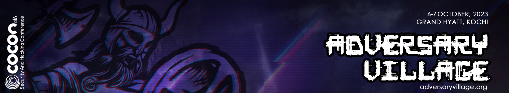
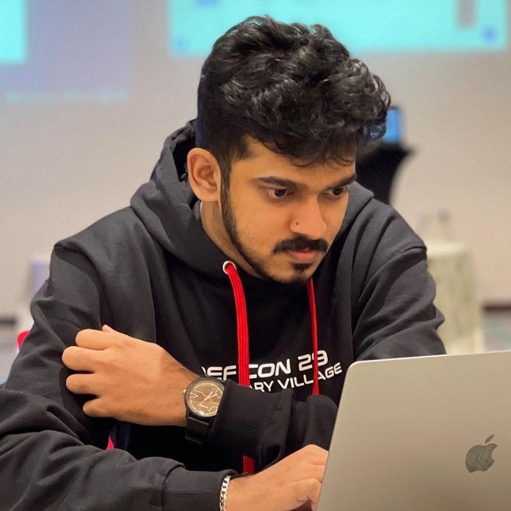
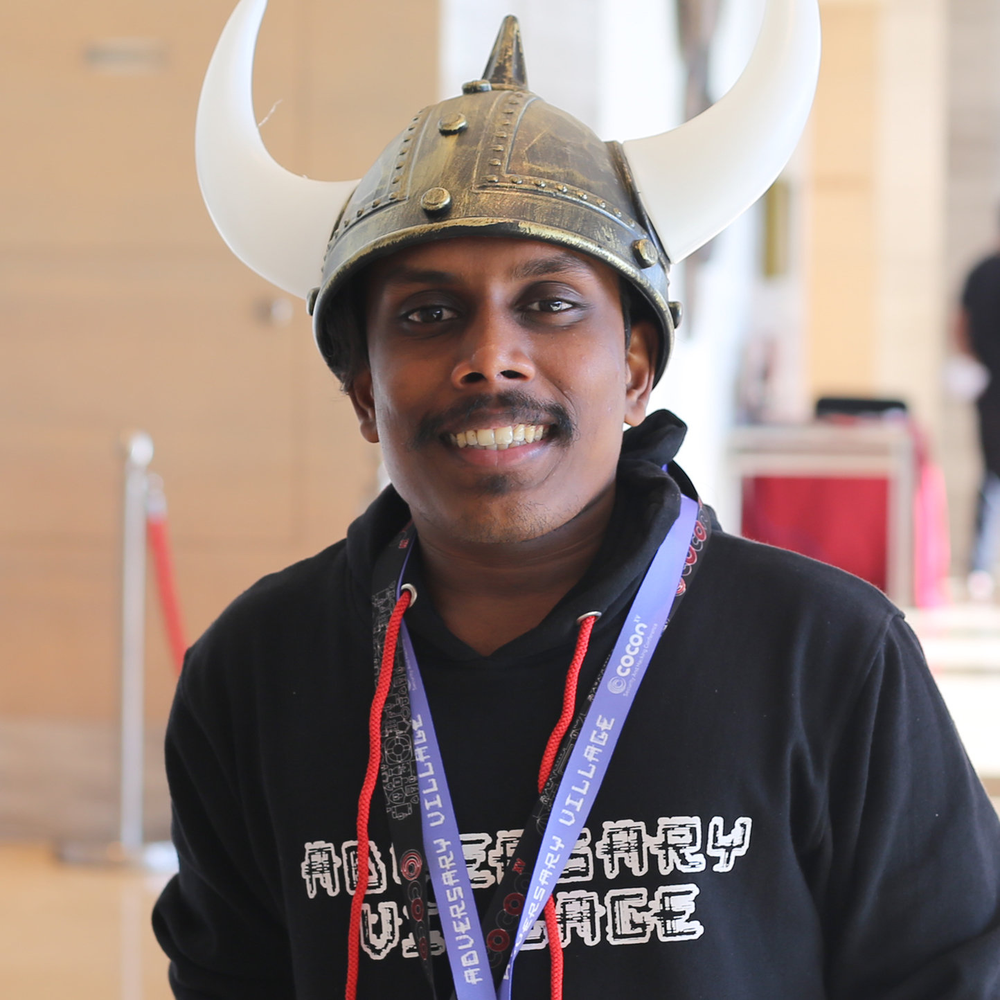
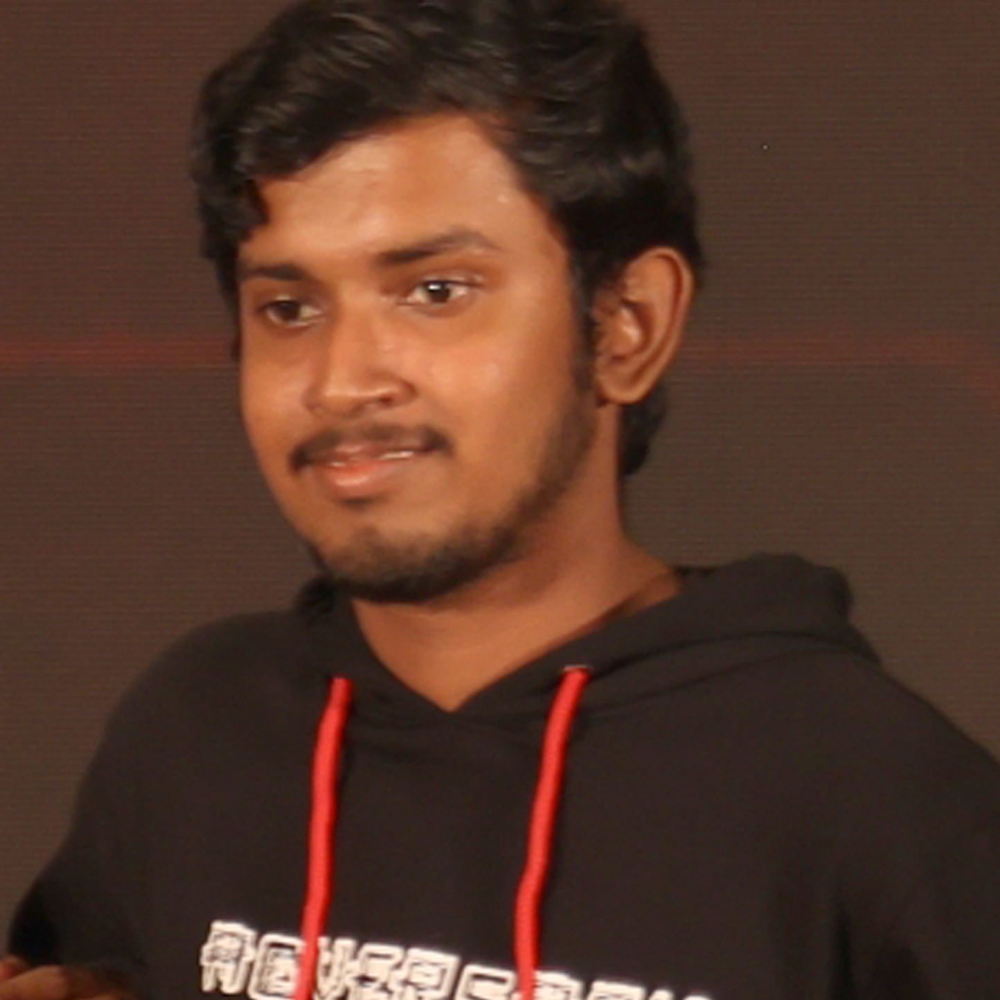
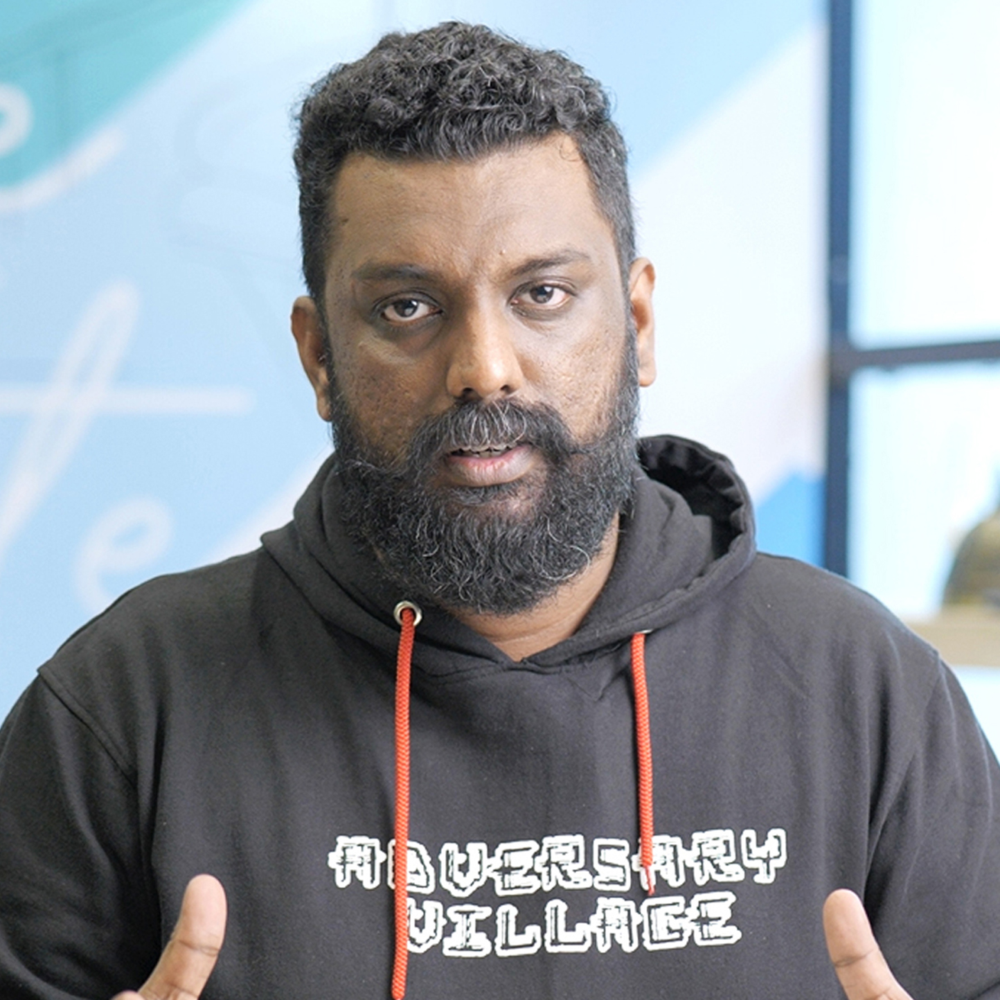

This workshop will introduce you to the Flipper Zero, a small, affordable, and powerful hardware hacking device. The workshop will be hands-on, and participants will have the opportunity to use the Flipper Zero to learn about the different technologies it can interact with. No prior experience with hardware hacking is necessary. The workshop will cover the following topics:
The workshop will be hands-on, and participants will have the opportunity to use the Flipper Zero to learn about the different technologies it can interact with. No prior experience with hardware hacking is necessary. Who should attend this workshop? This workshop is for anyone who is interested in learning about hardware hacking. It is a great introduction to the Flipper Zero, and it will give you the skills you need to start exploring the world of hardware hacking.
By the end of this workshop, you will be able to:
Requirements: You will need to bring the following items to the workshop: A Flipper Zero device (If available), A USB cable, A laptop


In the rapidly evolving world of Artificial Intelligence and Machine Learning (AI/ML), there are myriad concepts and considerations to explore. The talk delves into the core foundations and critical aspects of AI/ML systems. We will begin by unraveling the basics of AI/ML, shedding light on the fundamental principles that underpin intelligent computer systems. From understanding the essence of AI to the practical implications of machine learning, we'll demystify these technologies. Large Language Models (LLMs) have become prominent players in AI, but what exactly are they? and what they are not, debunking common misconceptions. You'll gain insight into the lifeline of a query and discover more about Tuning LLM(s), how they process etc. We'll delve into potential attack types, emphasizing the importance of safety and effectiveness in AI systems. Addressing data privacy concerns, input-related attacks, isolation strategies, and security of training data and models along with strategies to safeguard the training data.


Abhijith B R also known by the pseudonym Abx, has more than a decade of experience in the offensive cyber security industry. He is a professional hacker and offensive cyber security specialist, security researcher, trainer and public speaker. Currently, he is involved with multiple companies as an independent consultant, helping them with improving their current security posture and help bridge the gap between business leadership and cyber security professionals.
He was responsible for building and managing offensive security operations and adversary simulation for a prominent FinTech company called Envestnet, Inc. In the past, he held the position of Deputy Manager - Cyber Security at Nissan Motor Corporation, and prior to that, he worked as a Senior Security Analyst at EY. As the founder of Adversary Village he spearheads a community-driven initiative exclusively focused on adversary simulation, adversary tactics, purple teaming, threat actor/ransomware research-emulation, and offensive-adversary tradecraft. Adversary Village actively organizes villages at prominent events such as the DEF CON Hacking Conference, RSA Conference etc. Abhijith act as the Lead Organizer of an official DEF CON Group, DC0471. He is actively involved in leading the Tactical Adversary project an initiative that centers around adversary attack simulation and red teaming tradecraft.
Join Adversary Village official Discord server to connect with our amazing community of adversary simulation experts and offensive security researchers!